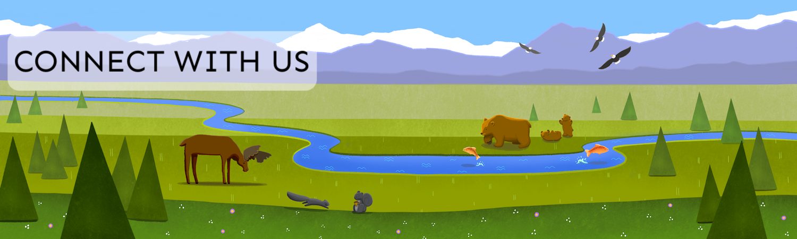

Openscapes is about engaging, empowering, and amplifying each other as we increase the visibility, value, and practice of open data science within our scientific communities.


Openscapes is about engaging, empowering, and amplifying each other as we increase the visibility, value, and practice of open data science within our scientific communities.
We are happy you are here.
NASA Openscapes Framework — We support researchers using NASA Earthdata served from the Distributed Active Archive Centers (DAACs) as they migrate workflows to the cloud
Openscapes Champions Cohorts — We aim to lead Champions Cohorts each year while also developing Mentors who can lead Cohorts for their own communities as part of their jobs
We are excited to grow the Openscapes community and open data science communities more broadly. Here are several avenues to get involved, and please email us with more ideas.
We are @openscapes on Twitter and @openscapes@fosstodon.org on Mastodon. We tweet about Openscapes news and events, amplify Openscapes Champions, and sporadically retweet other awesome things going on around environmental open data science. Tag us in your tweets about your open data science wins and challenges and we’ll retweet!
Sign up for our mailing list to receive infrequent emails from Openscapes so you can be aware of opportunities to participate in and amplify Openscapes efforts as they unfold.
Please see our events page for Openscapes Community Calls, conference talks and seminars/webinars, and opportunities through the Champions Program.
Cohorts are led remotely over 2.5 months and involve ~7 participating research groups. Please email us if you’re interested in booking a cohort.
We are thankful for the funding support that makes Openscapes possible, and are interested in further partnerships. If you are interested in sponsoring research groups to participate in the Openscapes Champions program, please email us.
Share your enthusiasm with others! Open data science is so powerful and empowering, we think the best way to engage others is to talk about it more. You can do this informally and in data-centric meetings (“Seaside Chats”). We hope our column Supercharge your research: a ten-week plan for open data science can help start and continue these conversations. And please share your experiences — tag us on Twitter, or add additional weekly activities in the column’s GitHub repository.
In your next presentations and publications, include a slide or sentence about open data science — what you have done and/or why it’s important. You’re welcome to use/remix slides from our presentations.
As you plan department seminar series, conferences, or webinar series, consider inviting Openscapes or others from the open data science community as a speaker!
There are more awesome ways to get involved with Openscapes and open data science than we have written above — please email us with your ideas for getting involved!